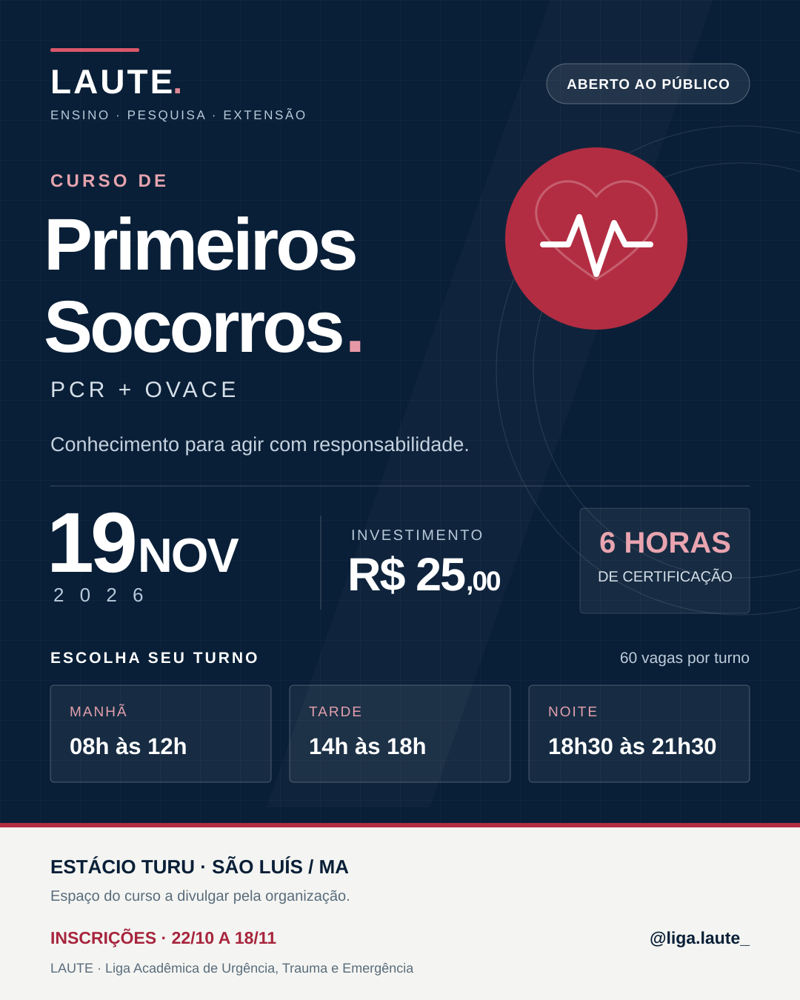

Próximo encontro · aberto ao públicoPrimeiros Socorros.
Primeiros Socorros.
PCR e OVACE.
Um novo curso da LAUTE para qualquer pessoa interessada. Escolha seu turno e amplie seus conhecimentos em primeiros socorros.
Inscrições de 22/10 a 18/11/2026. Não é obrigatório jaleco nem roupas brancas.